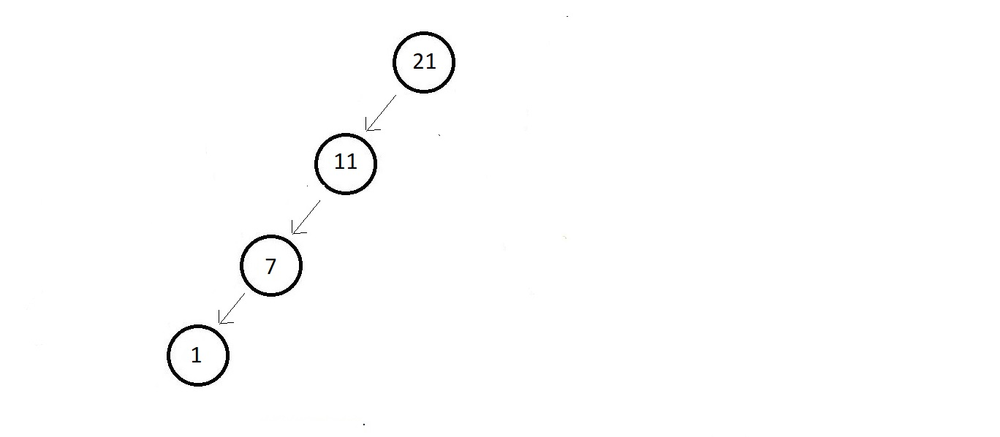
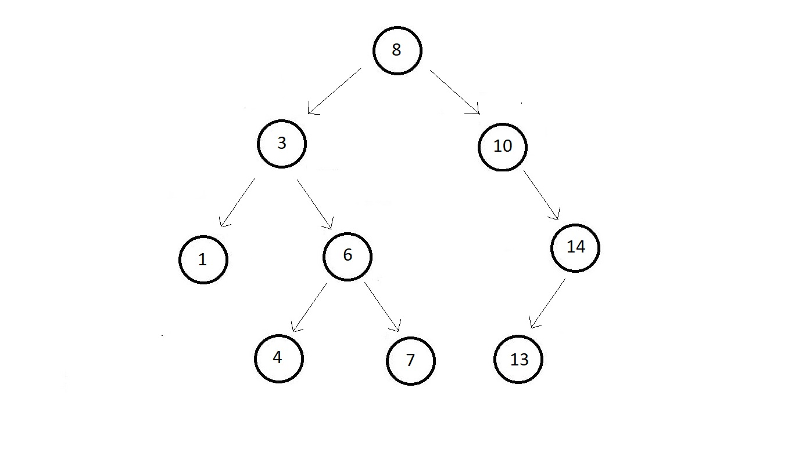
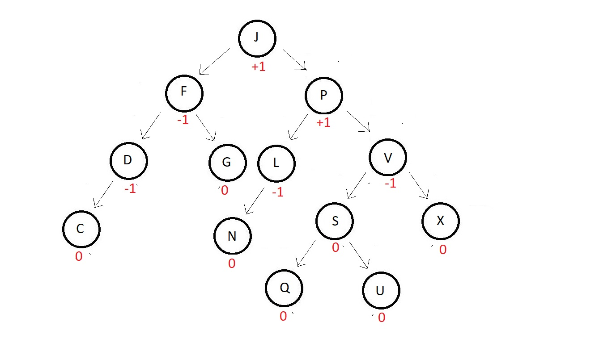
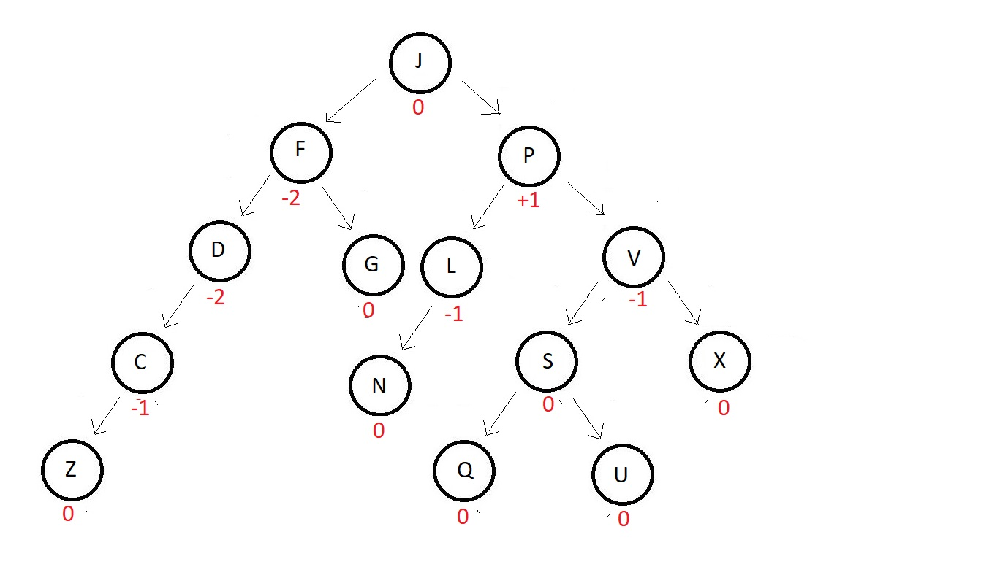

AVL Trees Introduction
The operations that we discussed for Binary Search Tree work faster when the tree is highly distributed, or
where the height is actually lose to logn and complexity tends to O(logn), but they come close to O(n) when
our tree becomes sparse, and looks unnecessarily lengthened.
This is where AVL trees come to rescure.
Why AVL Trees?
- Example ↓
- Suppose you are told to create binary search tree out of osme elements given to you.
- Supoose the numbers were (1, 11, 7, 21).
- And to avoid any labour, you simply sort the elements and write them as shown in the
figure below

- This is a skew binary search tree.
- Any operation here has a complexity O(n).
- An AVL tree is needed because
- Almost all the operations in a binary search tree are of order O(h) where h is the
height of the tree.
- If we don't plan our trees properly, this height can get as high as n where n is the
number of nodes in the Binary Search Tree (skewed tree)
- So, to guarantee an upper bound of O(logn) for all these operations we use balanced
trees.
- This is actually very practical, because when a binary search tree takes the
form of a list, our operations, say searching starts taking more time.
- Consider the binary search tree below

- To search 1, in this binary search tree, you would need only 3 operations, while
to search in a list type binary search tree having the same elements, this would
take 9 operations.
What are AVL trees?
- AVL trees are height balanced binary search trees. Because most of the operations work on O(h),
we would want the value of h to be minimum possible, which is log(n).
- Height difference between the left and the right subtrees is less than 1 or equal in an AVL
tree.
- For AVL trees, there is a balance factor BF, which is equal to the height of the left subtree
subtracted from the height of the rught subtree. If we consider the below binary serach tree,
you can see the balance factor mentioned beside each node. Carefully observe each of those.

You can see, none of the nodes above have a balance factor more than 1 or less than -1. So,
for a balance tree to be considered an AVL tree, the value of |BF| should be less than or equal
to 1 for each of the nodes, i.e., |BF| <e; 1.
- And even if some of the nodes in a binary search tree have a |BF| less than or equal to 1, those
nodes are considered balanced. And if all the nodes are balanced, it becomes an AVL.
- An AVL tree gets disturbed sometime when we try inserting a new element in it. For example, in the above AVL tree, if we try inserting an element Z at the end of the leftmost element, the balanced factor gets updated for each of the nodes following above. And the tree is no more an AVL tree. See the updated tree below

- To avoid this unbalancing, we have an operation called rotation in AVL trees. This helps maintain the balancing of nodes even after a new element gets inserted